Iconic mobile suits from the Universal Century timeline
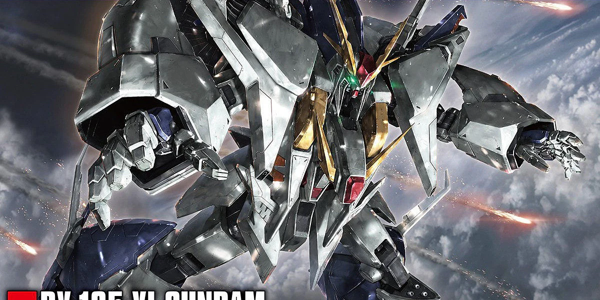
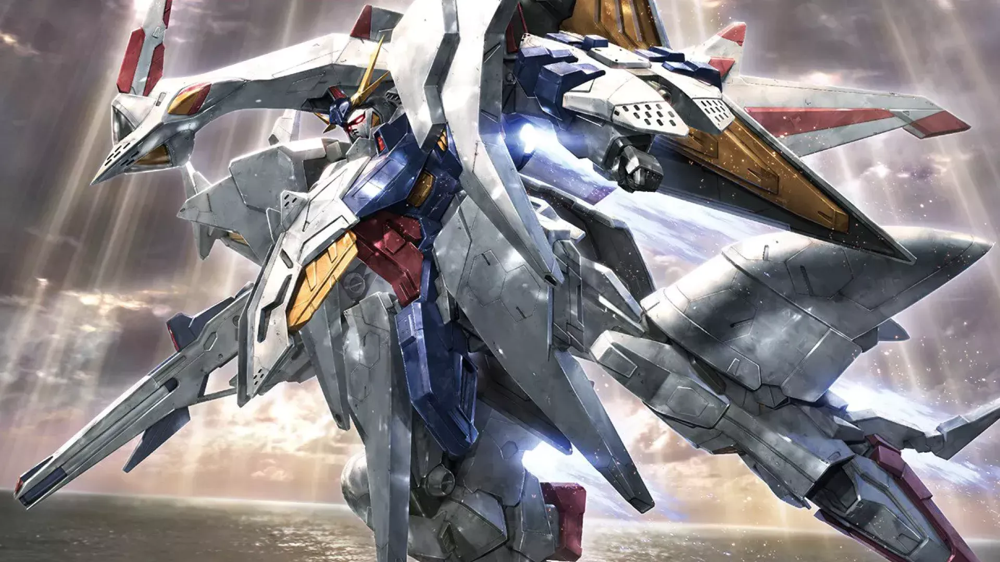
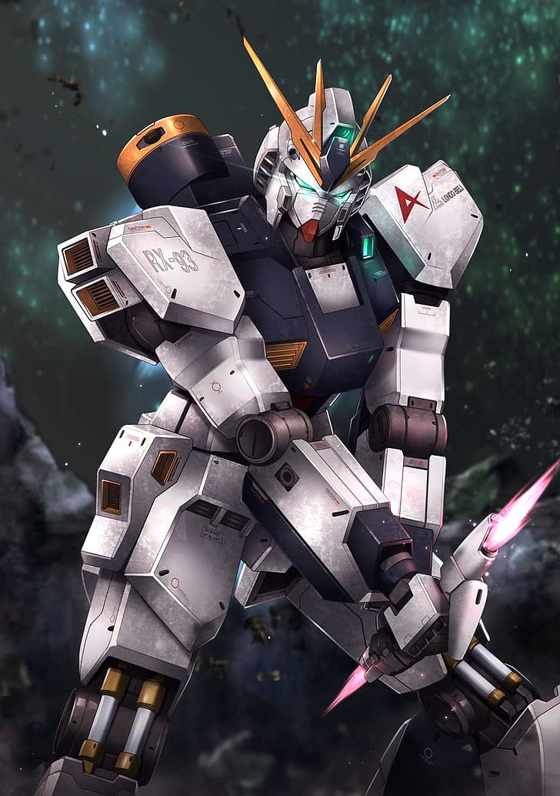
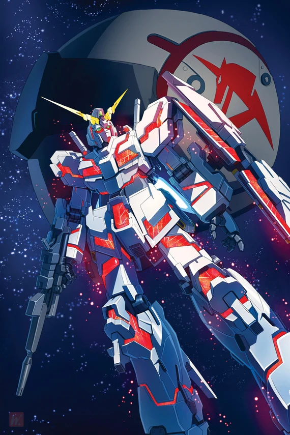
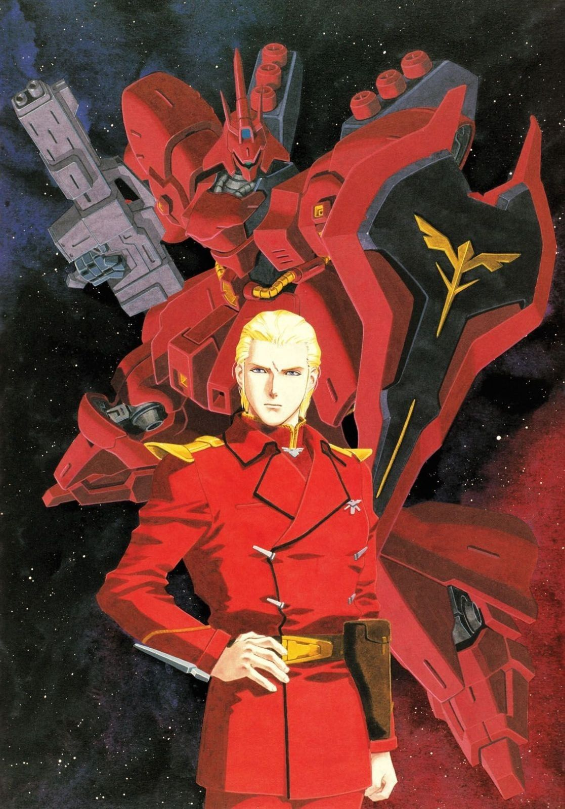
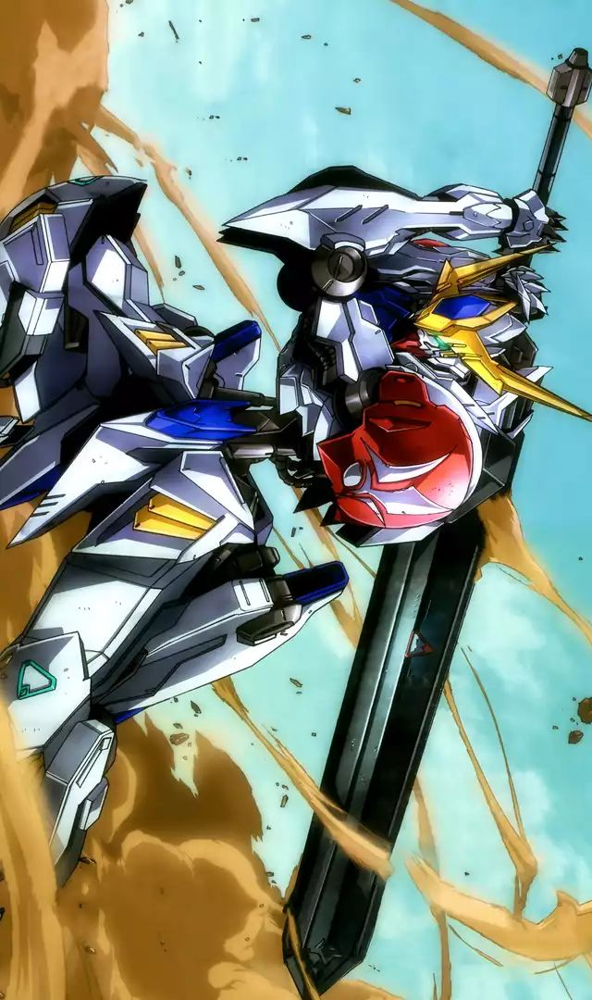
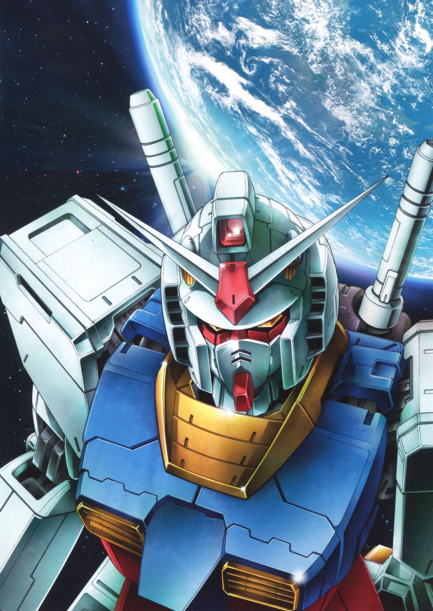
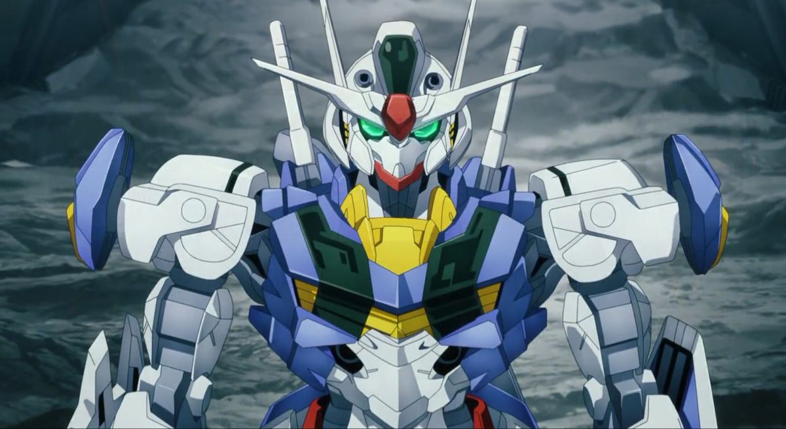
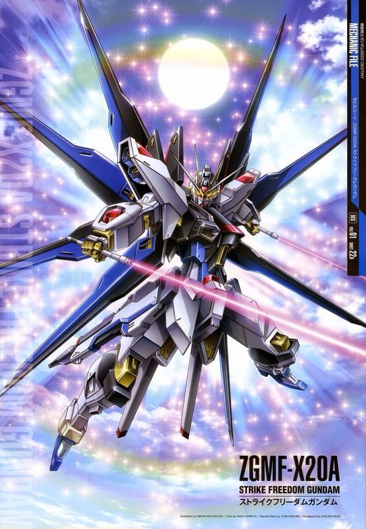
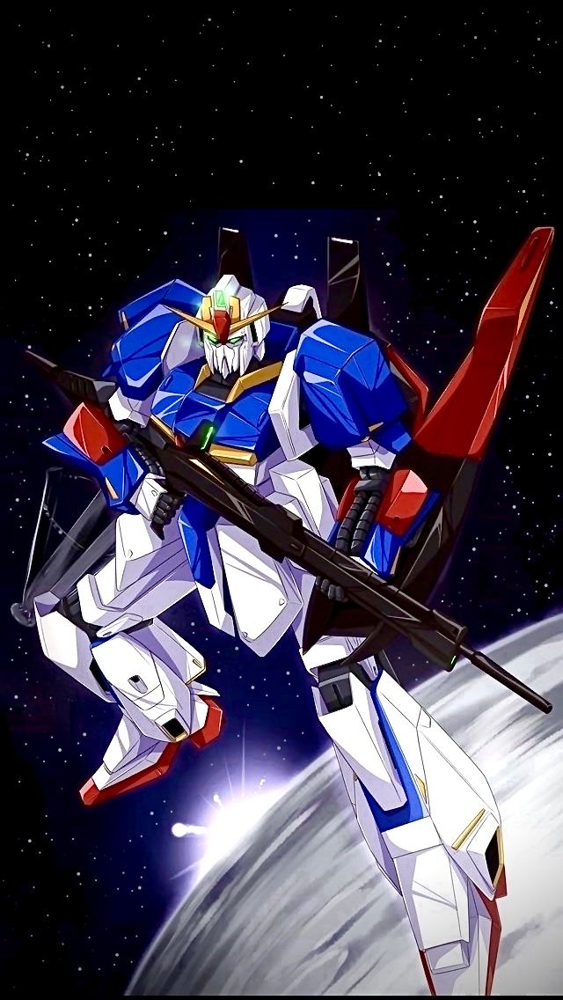
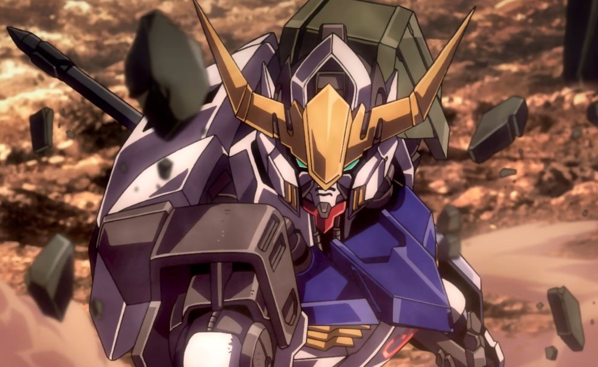
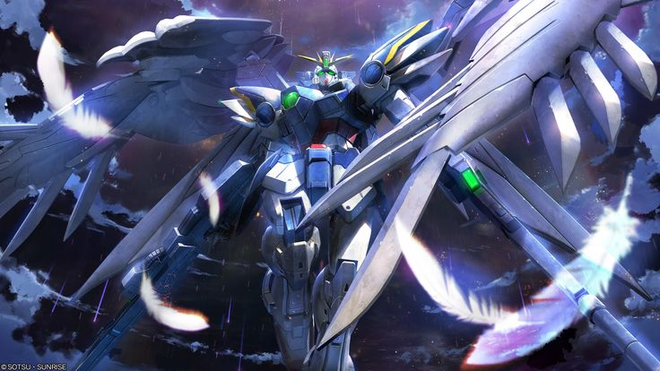
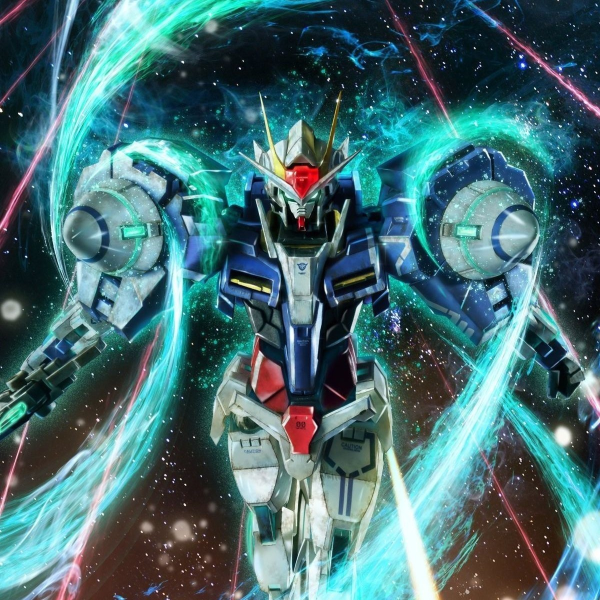
Set twelve years after the events of Char's Counterattack, Hathaway Noa — son of legendary captain Bright Noa — leads the anti-Federation organization Mafty. Piloting the powerful Xi Gundam, he wages a guerrilla war against the corrupt Earth Federation government while grappling with his own ideals and the memory of Quess Paraya. The trilogy adaptation by Sunrise features breathtaking animation quality and a mature narrative that explores terrorism, justice, and sacrifice in a way rarely seen in the franchise.
In the Post Disaster era, child soldiers of the private military company Tekkadan fight for the rights of Martian colonists against the corrupt Gjallarhorn organization. Led by Orga Itsuka and piloted by Mikazuki Augus, the ancient Gundam Barbatos becomes their weapon and symbol. The series is known for its unflinching portrayal of war, its focus on found-family bonds, and one of the most emotionally devastating endings in Gundam history.
In the year 2307 AD, fossil fuels are depleted and three major power blocs control the world's energy through orbital elevators. The paramilitary organization Celestial Being, armed with technologically superior Gundams, declares war on war itself. Setsuna F. Seiei pilots the Exia with the conviction that he is Gundam — not merely its pilot, but the embodiment of its purpose. The series brilliantly explores political intrigue, intervention ethics, and the meaning of understanding.